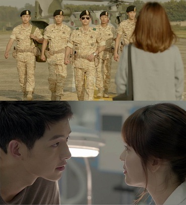

柳 大尉一直说：他作为军人是为了保护老人、孩子和美女，没错他一直在做，没有随便说说。 平时对女主也是信任和欣赏，对于姜医生与理事长的绯闻并没有追根问底，对于姜医生关于军人职业的质问，没有敷衍，有一说一。虽然二人的价值观不同，虽然职业不同，虽然两人  之间看似鸿沟很大，他一直是有担当的男人角色，更何况还有一张帅脸！！！这样的人设谁能不喜欢。虽然看起来有点主角光环的存在，可是挡不住对这种类型男人的喜欢。这也是本剧受欢迎的地方。（拍给妹子们看的军人戏） 本剧被称为宋仲基的撩妹情话大合集，几乎男女主角的每一句台词都激荡人心，说实话这些话真算不上新鲜，几乎所有的偶像剧都会类似的台词出现，没剧等逃脱。例如：我在心中想了一千多遍才干行动的；等黑了做坏事，我会喊的；被美丽的东西迷住了，你不知道吗等等。 情话虽差不多，还得看从谁嘴里说出来，不是吗。 直白的情话，没有各种暧昧和猜测，这剧走了不寻常的偶像剧路数。 女主乔妹饰演的姜医生也是如此，无论是和男主对话，字字相对有回应，大胆直白，与其他剧中娇羞的妹子不一般，女主的人设也讨人喜欢，有专业有爱心，虽然大龄，在男主面前有忐忑心思，又敢于说出自己想法。无论在职业、思想和感情上两个人都是平等相对的。